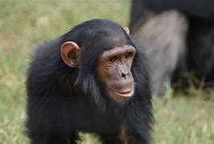
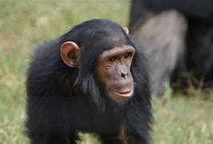
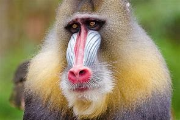
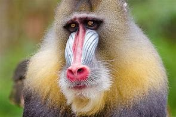

Grid gallery

 

 



Sliding gallery
Baboon
Baboons are primates comprising the genus Papio, one of the 23 genera of Old World monkeys. There are six species of baboon: the hamadryas baboon, the Guinea baboon, the olive baboon, the yellow baboon, the Kinda Baboon and the chacma baboon.
Black Howler
The black howler is a species of howler monkey, a large New World monkey, from northeastern Argentina, eastern Bolivia, eastern and southern Brazil, and Paraguay. Together with the brown howler, it is the southernmost member of the Alouatta genus.
Blue Monkey
The blue monkey or diademed monkey is a species of Old World monkey native to Central and East Africa, ranging from the upper Congo River basin east to the East African Rift and south to northern Angola and Zambia. It sometimes includes Sykes', silver, and golden monkeys as subspecies.
Chimpanzee
The chimpanzee, also known as the common chimpanzee, or simply chimp, is a species of great ape native to the forest and savannah of tropical Africa. It has four confirmed subspecies and a fifth proposed subspecies. The chimpanzee and the closely related bonobo are classified in the genus Pan.
Diana Monkey
The Diana monkey is an Old World monkey. The term “old-world monkey” refers to the family of monkeys known as Cercopithecoidea and the Diana monkey is only 1 species out of the 148 that are a part of this family.
Mandrill
The mandrill is a primate of the Old World monkey family. It is one of two species assigned to the genus Mandrillus, along with the drill. Both the mandrill and the drill were once classified as baboons in the genus Papio, but they now have their own genus, Mandrillus.
Proboscis Monkey
The proboscis monkey or long-nosed monkey is an arboreal Old World monkey with an unusually large nose, a reddish-brown skin color and a long tail. It is endemic to the southeast Asian island of Borneo and is found mostly in mangrove forests and on the coastal areas of the island.
Roloway Monkey
The roloway monkey is an endangered species of Old World monkey endemic to tropical West Africa. It was previously considered a subspecies of the Diana monkey. It is classified as Critically Endangered due to habitat loss and continued hunting for the bushmeat trade.